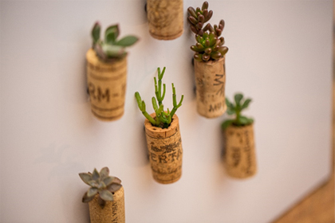
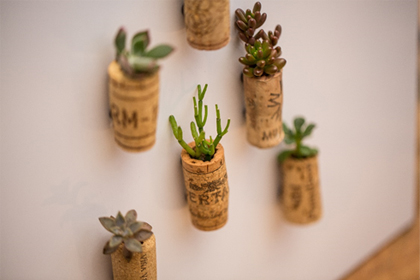

- Name : 이재찬
- Birth : 1997. 03. 28
- Address : 서울시 강서구 우장산동
- Phone : 010-9090-8469
- Email : toxic023@naver.com
로딩중
LEE JAE CHAN
DREAMING PROGRAMMER
"나는 꿈꾸고 실행할 수 있는 사람이야?" 라는 질문에
"당연하지 너도 알고있잖아, 나는 나를 믿어" 라는 대답
스크롤바를 내리면 작품을 감상할 수 있습니다.
ABOUT ME
VISION
'나는 나중에 무엇을 할까?'라는 질문을 스스로에게 많이 던져보았습니다.
'재미있고, 하고싶은일을 하자'라는 결론이 나왔습니다.
평소 삶의 만족도를 중요시해온 저에게 매우 중요한 질문이었습니다. 답은 간단했습니다. '하고싶은걸 하자!'
비전공자 이지만,
배운만큼 생각한대로 결과물이 나오고, 더 나은, 더 좋은 코딩과 디자인을 위해서 시간을 들이는것이 즐겁기만 했습니다.
계속해서 발전하고 성장 하고싶은 욕심이 생겼습니다.
아는만큼 활용할수 있듯이, 더 배우고 성장하고 싶습니다.
미래의 나를 위해 누가 보지 않아도 노력하는 모습 보여드리겠습니다.
WHAT CAN I DO?
효율적인 로직구현을 추구하고, 웹표준에 벗어나지 않게 구성할 수 있습니다.
사용자경험의 극대화를 위해 집중하고, 매력적이고 인상깊은 UX/UI를 제작하기 위해
노력합니다.
Js/Jquery 로직구현을 플러그인에 그치지 않고 필요한 기능들을 직접 구현가능합니다.
매번 새로운 기법과 효율적인 로직을
알아나가는것이 재미있고,
고민해나가는것에
대한 성취감이 매우 높습니다.
규칙에 벗어나지않으며 생각대로 만들어나가는것이 코딩의 매력이라고 생각합니다.
- ZenCoding(EMMET) & SCSS
- Javascript & jQuery 로직구현
- MVC 패턴의 페이지 구성
- 반응형 웹디자인
- HTML5 DTD 유효성 검사 통과
- 웹접근성을 향상시킨 시멘틱 페이지
WORK STYLE
- 구조와 디자인, 기능을 분리한 MVC패턴을 구현
- 자바스크립트와 jQuery를 구현
- HTML5 시멘틱과 CSS3 웹페이지를 구현
다른 사람이 말하는 나
-
민성
항상 성실해서 신기한 사람한번 무언가에 집중하면 오래동안 물고 늘어지며, 무엇이든 재미를 찾기 위해서 노력하는것 같다. 무얼하는지 물어보면 항상 해왔던 것들을 성실히 하는 모습을 보여주곤 한다. 한결같고 한번 시작하면 끝을 보기위해 성실히 하는것이 신기할 따름이다.
-
성호
먼저 다가오는 사람같은 동네에 거주해서 그런지 몰라도, 매번 안부를 물어봐주며, 잠깐이라도 얼굴을 보기위해서 노력하는것이 느껴진다. 자신의 주변사람을 챙기는법을 아는 사람이고, 그만큼 사교성과 친화력이 탄탄한것같다. 만약 직장상사였다면 편안한 회사생활을 하지 않았을까 한다.
-
준엽
예스맨항상 긍정적이라는 생각이 들었다. 별로 고민이 없어보이는것 같아보여도 생각이 깊고, 부정적인 생각보다는 긍정적인 생각에 더 집중하는것 같았다. 안좋은 결과에도 긍정적으로 생각하고, 어떤 일에도 배우는것이 있다며 '예스'를 외치던 모습이 생각이 난다.
SKILL
탁월한 UX분석능력과 Emmet/Zencoding 활용
-
UX/UI 디자인
사용자의 Experience의 극대화와
Needs를 충족할 수 있게 도출 -
반응형 웹표준
규칙을 벗어나지 않으며 HTML/CSS 작성,
JS와 JQUERY 기반의 로직 구현 가능
SASS 전처리기와 리액트 라이브러리 활용
-
Sass Preprocessor
협업과 작업 효율성을 극대화 시키기 위해
필요한 SCSS를 통해 스타일링 가능 -
반응형 웹표준
프론트엔드의 꽃인 REACT 코드 구현,
JS와 JQUERY 기반의 로직도 구현 가능
ABILITY
젠코딩
HTML5
CSS
jQuery
adobe XD
GitHub
95%
리더쉽
적극성
성실성
사교성
책임감
정직성
온라인 이력서
'하고 후회하자'
좋은 기회를 놓친다면, 그만큼 아쉽고 후회가 많이 남는 일은 없다고 생각합니다.
사람들은 '그때 내가 이랬더라면?','그때 왜 실행하지 않았지?'라며 놓친 기회를
생각합니다.
이런 생각들이 오히려 자신을 소극적으로 만든다고 생각합니다.
'일단 부딪혀보자', '실패해도 얻는게 있을거야' 라는 생각으로 임한다면
자신감과 더불어,
적극적인 사람이 되는것같습니다.
작은것이라도 얻을 수 있는 기회라면, 놓치지 않는것이 자신을 발전시키는 지름길 이라고 생각합니다.
앞으로의 행보를 지켜봐 주시길 바랍니다.
Resume - 온라인 이력서 보기
UX DESIGN
작품리스트
이전 다음내가 생각하는 사용자경험 - User Experience
UX의 정의에 대해서 알아보고, 다양한 UX의 사례들, 특히나 성공적인 UX라 불리는 사례들을 보면서
사용자 경험을 바탕으로 제품이나 서비스를 구축하는것이 중요하다는것을 깨달았습니다.
내가 생각하는 UX란, 사용자의 기억에 오래남으며 편리함과 효율성 그리고 매력을 극대화 시켜야 하고,
원하는 활동을 손쉽게 이용할 수 있는것이라고 생각합니다.
누군가의 감정과 감각의 총합인 UX에서 올바른 행동은 그저 관점의 변환인 것 같다.
사용할 입장에서 본다면 더 쉽게 다가갈수 있고, 필요한것을 더 다양하게 제공할 수 있지 않을까?.
혼잡한 상황을 줄여주는 카카오T 서비스
디자인과 UX의 차이
- 1. 와인 코르크 마개
-
와인의 코르크 마개를 작은 다육식물
화분으로 업사이클링(Upcycling)한 사례
 

- 2. 물티슈 보호 캡
-
오염, 수분증발을 방지하는 물티슈 보호
캡을 콘센트 보호 덮개로 활용한 사례


PORTFOLIO
스타벅스 (메인페이지 클론)
Star Bucks Main Page Clone
기존 메인페이지의 애니메이션이나 슬라이드, 페이드 효과를 직접작성
모든 애니메이션의 속도를 적절히 조절
컨텐츠의 위치를 USER를 위해 더 가독성 있게 조정
작업프로그램 : Visual Studio Code
100% 개인 작업

컴포즈커피 (메인페이지 클론)
Compose Cofee Main Page Clone
기존 메인페이지의 애니메이션이나 슬라이드, 페이드 효과를 직접작성
숫자증가의 애니메이션 또한 추가
컨텐츠의 위치를 USER를 위해 더 가독성 있게 조정
작업프로그램 : Visual Studio Code
100% 개인 작업

일룸 (메인페이지 클론)
Iloom Main Page Clone
메인 페이지의 크기를 조금 증가시켜 가독성을 증가 시킴
컨텐츠의 크기와 배치를 미세하게 조정
hover시 색감 조정
작업프로그램 : Visual Studio Code
100% 개인 작업
크림 (메인페이지 클론)
Kream Main Page Clone
더보기 부분의 디자인 변경
상품 섹션의 틀을 일정하게 하여 통일성 증가
슬라이드의 버튼을 오른쪽만 제작
작업프로그램 : Visual Studio Code
100% 개인 작업
소니 (메인페이지 클론)
Sony Main Page Clone
슬라이드 동영상 hover시 마우스 커서의 모양 변경
텍스트가 나타나는 애니메이션을 직접 작성
불필요한 컨텐츠를 합쳐 하나의 컨텐츠로 만듬
작업프로그램 : Visual Studio Code
100% 개인 작업

캉골 (메인페이지 클론)
Kangol Main Page Clone
상품의 가독성을 위해서 텍스트를 줄이고
상품의 크기를 증가시킴
통일성을 위해서 섹션의 크기를 일정화함
작업프로그램 : Visual Studio Code
100% 개인 작업

반스 (메인페이지 클론)
Vans Main Page Clone
반스 특유의 느낌을 살리려 노력했고
텍스트에 강조를 주기보다는 상품에 강조를 줌
공지사항 슬라이드의 버튼을 오른쪽만 제작
작업프로그램 : Visual Studio Code
100% 개인 작업

필요한 기능을 직접 javascript/jquery 로직 구현
‘스타일을 창조하여 그것을 섬세한 디자인으로 탈바꿈 시키고싶다’ 는 마음으로 매일 노력하고 있습니다.
HTML5 & CSS3 시멘틱 페이지를 SCSS, ZenCoding(EMMET)으로 작성할 수 있습니다.
클라이언트의 요구사항을 적극적으로 반영하는 UI/UX 디자인 능력은 저의 최고의 장점중 하나입니다.
JS 플러그인을 사용에 그치지 않고 필요한 기능을 직접 구현할 수 있는 Javascript/jQuery 로직구현이 가능합니다.
새로운 코딩기법과 디자인을 배우는 것이 정말 즐겁습니다.
for문과 다중 if문의 결합한 로직 구현
SASS, Emmet 활용
페이지 전체의 계층구조를 입체적으로 분석할 수 있는
실무형 코딩기법 Emmet을 사용할 수 있어 업무시간을 단축시킬 수 있을뿐 아니라,
유지보수도 더욱 쉽고 정확하게 처리할 수 있습니다.
SCSS의 가장 큰 장점인 변수와 Mixin 기능을 적극 활용하여
CSS 스타일링을 할 수 있습니다.
Sprite-Image와 IR(Image Replacement)기법에 능숙
id, class를 남발하지 않고 원하는 요소를 셀렉팅할 수 있는 능력,
CSS3 Transform, Transition, Keyframes을 이용한 애니메이션 효과 구현
직접 구현한 슬라이드
CONTACT
귀사에 입사를 지원합니다.
저의 웹퍼블리싱 이야기 입니다.
질문을 선택하시면 정리된 답변을 보실수 있습니다.
- 1. html5의 가장 큰 특징은 무엇일까요? 화살표
-
기존의 모든 문서타입을 지원하고, 간단한 문법일지라도 의미적인 요소들이 강해졌습니다.
이전과 다르게 생산성이 향상된 코딩을 지원하고, 문서의 크기 또한 작아졌습니다. 플러그인없이 미디어의 호환이 가능하고
SVG,캔버스,CSS 3D 기능또한 가능하여 사용자에게 시각효과를 제공할 수 있습니다. - 2. 웹표준, 웹접근성, 시맨틱웹에 대해 설명해 주세요. 화살표
-
웹표준 - 한쪽 기준에 치우지지 않고, 표준대로 공통적인 요소를 사용하여 만들 수 있게 제시된 표준
웹접근성 - 일반인, 장애우, 고령자 등을 포함한 누구나 동등하게 접근할 수 있도록 만든 방식
시맨틱웹 - '의미론적인 웹' , 흩어져있는 정보와 자원들을 원하는 결과물만 골라내서 찾을 수 있게 도와주는 지능형 웹
- 3. 자바스크립트 라이브러리 사용시 가장 큰 장점은? 화살표
-
바닐라 자바스크립트의 문법을 조금더 간결화 하고 작업의 효율성을 극대화하며,
DOM을 손쉽게 조작하고, CSS 스타일 역시 간단히 적용할 수 있는 장점이 있습니다. - 4. .setInterval() 함수에 대해 설명하시오. 화살표
-
일정한 시간간격으로 작업을 실행 시킬 때 사용하는 함수로,
예를 들어, 슬라이드 자동 재생이나 시간의 1초단위 변경을 할때 주로 사용합니다. - 5. CSS 미디어쿼리는 어떤 역할을 수행하는지 답하시오~! 화살표
-
반응형 웹디자인을 할때 주로 사용하며, PC, 모바일, 태블릿 등 호환되는 화면 크기에 따라
비율을 설정하고 미디어와 텍스트, 이미지의 크기 변화를 주며 사용자에게 불편함 없이 다가갈수 있도록
도와주는 로직입니다.
더욱 궁금하신 점은 면접시 말씀드리겠습니다. 감사합니다~!
본 페이지는 저의 개인 포트폴리오용으로 제작되었으며, 상업적인 목적과 관련이 없음을 알려드립니다.